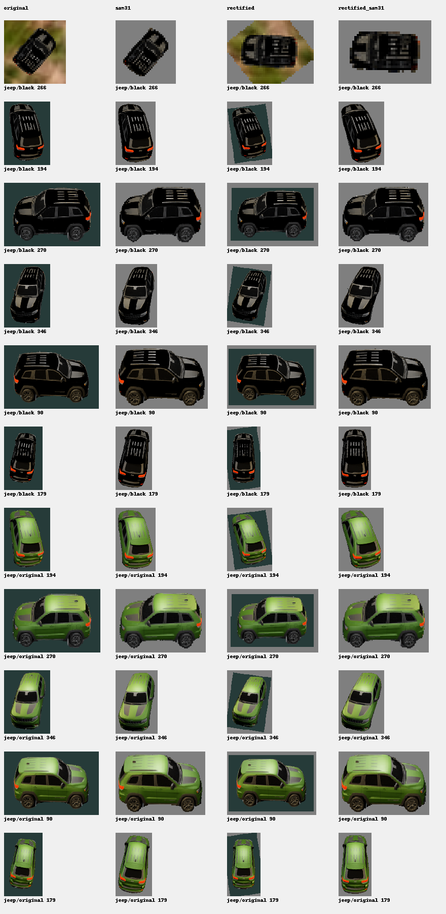

40 of 50,400 extended scans have complete image/vector pairs in this snapshot. 76 synthetic observer crops are included, with four processing choices for 49 Jeep crops. These choices replace the same captures rather than creating independent observations.
Jeep geometry correction uses declared simulator dimensions (4.0 × 1.9 × 2.0 m), continuous pose and camera geometry. SAM 3.1 is run again on the corrected crop, followed by fresh EG2 encoding. This is a same-view local correction, not recovery of hidden 3D detail. Original RGB inputs are retained.
| Input | 128D | 256D | 512D | 768D |
|---|---|---|---|---|
| original | 45/49 | 46/49 | 45/49 | 46/49 |
| sam31 | 47/49 | 48/49 | 48/49 | 48/49 |
| rectified | 42/49 | 45/49 | 45/49 | 45/49 |
| rectified_sam31 | 47/49 | 47/49 | 46/49 | 49/49 |
Paired exploratory synthetic views, not independent physical acquisitions. SAM alone performs better at 256/512D; combined processing performs best at 768D. No universal improvement or calibrated identity probability is established. People are outside the vehicle reference catalog.
Adopted EG2 descriptions are display labels; source asset IDs remain separate. Closest vocabulary matches are diagnostics and can disagree with an adopted class description.
Each dimension and selected PCA cohort retains its existing historical mean/components. New vectors are projected through those axes, never used to refit them. Colors and short/long representations are not independent evidence.
Snapshot provenance · Plot data · New full EG2 vectors · Vector/image index · Paired result tables
